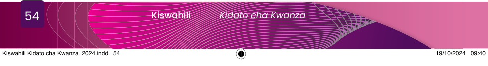

Eleza mambo matano (5) yanayoweza kukusaidia kuelewa unaposikiliza mazungumzo.
Sikiliza kifungu cha habari kifuatacho kinachosomwa na mwenzako, kisha kifupishe kwa sentensi zisizozidi tano (5).
Wakazi wa Kijiji cha Janda, mkoani Katumbarazi, wameamua kushirikiana kujenga mabweni kwa ajili ya shule ya sekondari iliyoko kijijini kwao.
Akiongea kwa bashasha katika hafla ya kuzindua mabweni hayo, Mkuu wa Mkoa wa Katumbarazi, Brigedia Chekero Rukweche, amewashukuru wanakijiji hao kwa kuona umuhimu wa kujenga mabweni.
Wanafunzi hao walikuwa wakihangaika kutembea umbali mrefu kwenda shuleni na kurudi nyumbani.
Jumla ya mabweni manne yamekamilika, ambapo mawili yatatumiwa na wavulana na mawili yatatumiwa na wasichana.
Ujenzi wa mabweni hayo umegharimu zaidi ya shilingi milioni 150.9, ambazo ni michango iliyotolewa na wanakijiji hao sambamba na nguvukazi.
Kwa kutumia vifaa vya TEHAMA au kamusi, eleza maana za maneno yafuatayo:
Fanya majadiliano na wenzako darasani kuhusu chanzo cha mmomonyoko wa maadili kwa vijana na kupendekeza nini kifanyike ili kuondoa hali hiyo.
Kisha, andika ufupisho wa mjadala huo kwenye daftari lako kwa maneno yasiyozidi 150.
